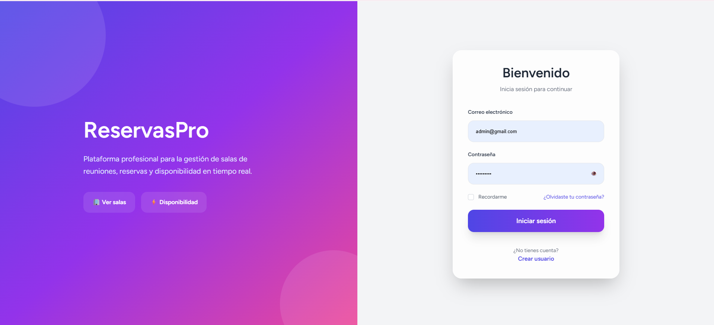

Sistema de Reserva de Salas
Sistema web desarrollado para optimizar la gestión y reserva de salas mediante una plataforma moderna e intuitiva. Permite administrar usuarios, espacios, disponibilidad y solicitudes de reserva, ofreciendo una experiencia eficiente tanto para administradores como para usuarios finales. Fue desarrollado con Laravel, Vue.js, Inertia.js, PostgreSQL y Tailwind CSS, siguiendo una arquitectura organizada y buenas prácticas de desarrollo.
Ver repositorio